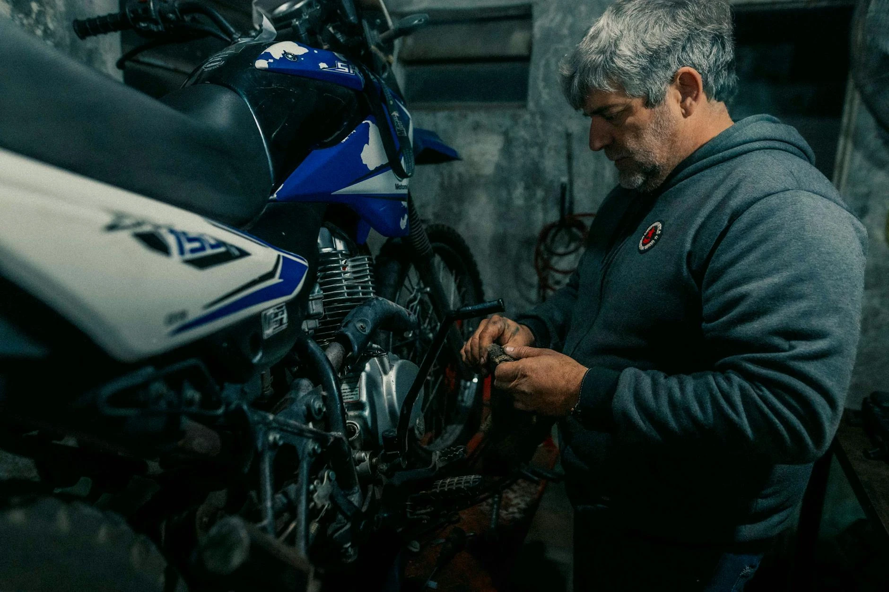

À propos de David Zwarts
Les services polyvalents de David
David est un homme à tout faire polyvalent, capable d’intervenir sur une large gamme de travaux avec sérieux et précision. De la pose de parquet à la vidange de moto ou de voiture, chaque intervention est réalisée avec soin, professionnalisme et le souci du détail.
Il peut enchaîner une tonte de gazon dans un jardin, l’entretien des extérieurs ou même la création complète d’une clôture robuste et esthétique. Chaque chantier est préparé et validé sur devis, puis exécuté et terminé proprement, avec une attention particulière à la qualité du résultat et à la satisfaction du client.
Lorsque certaines réparations nécessitent l’intervention d’un spécialiste ou d’un garage, David conseille les pièces à acheter ainsi que le meilleur endroit pour faire effectuer les réparations. Cette transparence et cet accompagnement permettent de garder le contrôle sur le budget tout en bénéficiant de conseils fiables et honnêtes.
Il propose même des forfaits d'entretien ou de révision pour les voitures et les motos.
Polyvalent, minutieux et à l’écoute, David est un partenaire de confiance pour les petits et moyens travaux de la maison, du jardin et de l’entretien mécanique.
